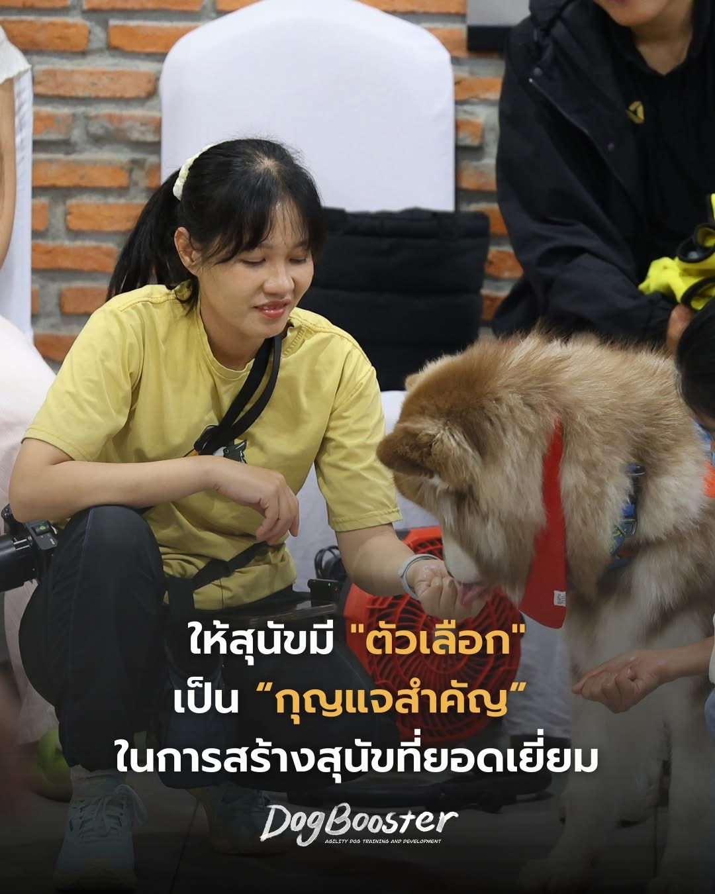

หลักการพื้นฐานที่สำคัญที่สุดของทุกสิ่งในการฝึกสุนัข
เกมนั้นคือ ItsYerChoice (IYC) 🎯
เกมที่จะเปลี่ยนกระบวนการคิดของสุนัขอย่างแท้จริง
เมื่อคุณเริ่มนำเกมสำคัญนี้เข้ามาเป็นส่วนหนึ่งของกิจวัตรประจำวัน
ความสัมพันธ์ระหว่าง “สิ่งที่สุนัขต้องการ” กับ “ตัวเจ้าของ” จะเปลี่ยนไปตลอดกาล
การเข้าใจว่าสุนัขคิดและตัดสินใจอย่างไร คือ “กุญแจ” สำคัญ ที่จะทำให้สุนัขทำในสิ่งที่เจ้าของต้องการ โดยไม่ต้องตะโกน ข่มขู่ หรือคอยจับตาดูตลอดเวลา เพราะการทำในสิ่งที่คุณต้องการ จะกลายเป็น “ความคิดของสุนัขเอง” 💡
เกมนี้คือการสร้างเงื่อนไขให้สุนัขของเราได้ฝึกตัดสินใจอย่างมีวิจารณญาณ ไม่ใช่การบังคับหรือสั่งการ แต่เป็นการ “เปิดทางเลือก” ให้สุนัขได้เรียนรู้ด้วยตัวเอง
ตอนนี้พวกเรากำลังสอนให้สุนัข “ควบคุมตนเอง” แทนที่จะ “ถูกควบคุมจากภายนอก” สุนัขที่มีการควบคุมตนเองได้เรียนรู้ที่จะมี “การควบคุมแรงกระตุ้น” แม้อยู่ในสภาพแวดล้อมที่กระตุ้นอารมณ์อย่างมาก
แทนที่จะทิ้งคุณไปวิ่งไล่กระรอก แย่งของเล่น หรือดมหาเศษอาหารทุกชิ้นบนพื้น สุนัขของคุณจะเลือกเล่นเกมกับคุณ เพราะรู้ดีว่ารางวัลจะได้มาจากการเลือกที่ดีของตัวเอง
เกมทุกเกมมีกติกา แต่ก็ยังเป็นเกมที่พวกเราทุกคนชอบเล่น และ ItsYerChoice ก็ไม่ต่างกันสำหรับสุนัขของคุณ การควบคุมแรงกระตุ้นของสุนัขจะดีขึ้นเรื่อยๆ จนคุณสามารถไว้ใจพวกเขาได้มากขึ้น แม้ในเวลาที่ไม่มีใครดูแล ต่อให้มีเนื้อย่างวางล่อตาล่อใจอยู่บนเคาน์เตอร์ในครัวที่สุนัขเอื้อมถึงก็ตาม
นี่คือรากฐานสำคัญที่จะช่วยขจัดความหงุดหงิดในการฝึกสุนัขได้ถึง 90% สร้างการตัดสินใจดีๆ เล็กๆ น้อยๆ ซ้อนทับกันไปเรื่อยๆ จนนำไปสู่พฤติกรรมที่ซับซ้อนและน่าทึ่งมากขึ้น
หลังจากที่เจ้าของทำให้ ItsYerChoice เป็นส่วนหนึ่งในกิจวัตรของการมีปฏิสัมพันธ์กับสุนัขแล้ว จะสังเกตเห็นว่าสุนัขเริ่มมองหา “การอนุญาต” ก่อนที่จะได้สิ่งที่พวกเขาต้องการ
พวกเขาจะเรียนรู้ที่จะ “เสนอ” พฤติกรรมควบคุมตนเองด้วยตัวเอง โดยที่ไม่ต้องบอกเลยสักคำ… มันจะเป็น “ทางเลือกของพวกเขาเอง” 💛
สอบถาม / เริ่มฝึกกับ DogBooster